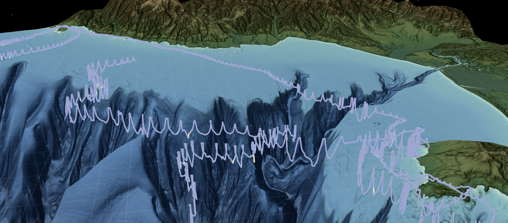
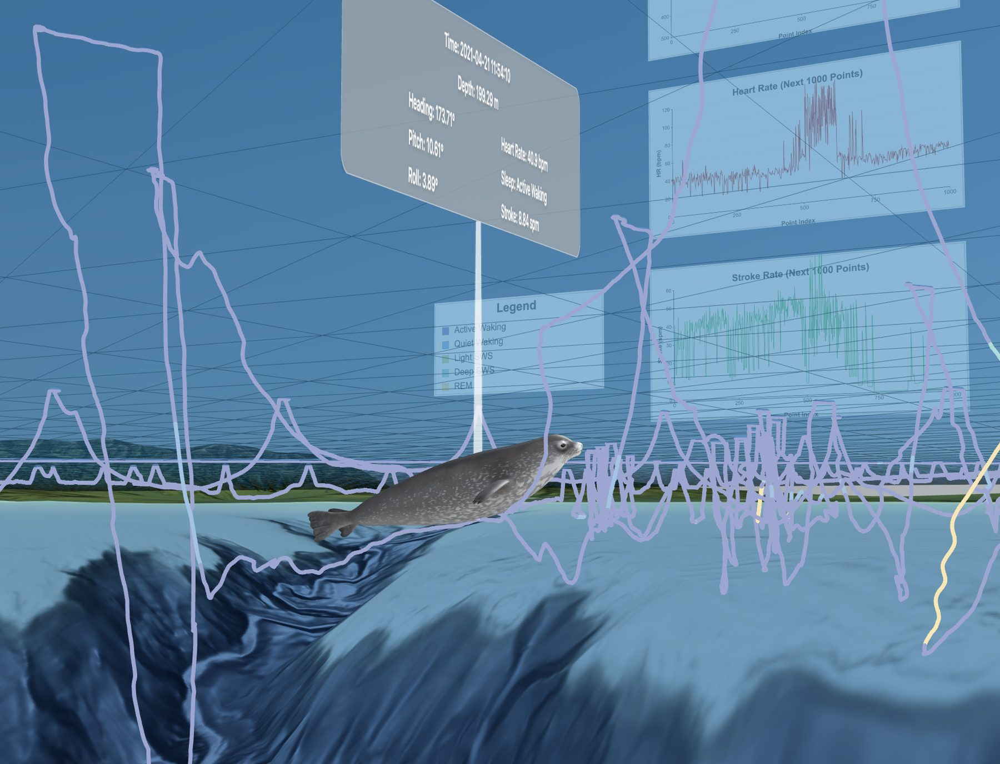

Sensemaking in VR
Exploring northern elephant seal migration patterns through immersive visualization.

Exploring northern elephant seal migration patterns through immersive visualization.
This project is a multi-user VR experience designed to help marine biologists analyze and make sense of northern elephant seal migration patterns in Monterey Bay, California. By translating complex tracking data into an immersive 3D environment, the platform enables researchers to discover spatial and temporal patterns that are difficult to detect through traditional 2D visualizations.
Scientific sensemaking is exploring complex data, finding patterns, and working out what they mean. For biologists studying northern elephant seals, that means interpreting years of tracking data, and 2D charts make it hard to see how paths relate to terrain, depth, and time.
We brought tracking data and underwater topography into one shared 3D space, so researchers can investigate spatial relationships and ask questions they might otherwise miss.

By placing each seal's path inside a 3D model of the ocean floor, depth, distance, and time become something researchers can move through instead of read off an axis. Charts for signals like heart rate and stroke rate sit alongside the paths, so patterns in how a seal moves can be compared with patterns in its body, revealing relationships that flat charts hide.
To make that exploration feel natural, I implemented raycasting in Three.js so researchers can point at and select individual migration paths in VR. Overlapping trajectories made this tricky, so the focus was on making each path easy to pick out while keeping the data clear and easy to explore.